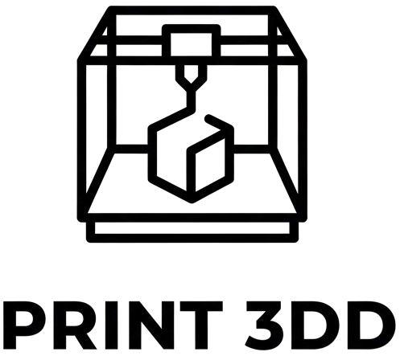

El futuro tiene forma. Nosotros lo creamos
Convertir tus ideas en realidad tangible mediante la impresión 3D de alta precisión, ofreciendo un servicio personalizado y soluciones creativas para cada proyecto.
Ser el estudio de impresión 3D de referencia para creadores, diseñadores y empresas en nuestra región, reconocidos por nuestra capacidad para dar vida a las ideas más innovadoras con confiabilidad, calidad excepcional y un enfoque profundamente colaborativo.
Precisión: Nos comprometemos con la máxima fidelidad y calidad en cada impresión.
Innovación: Estamos en constante aprendizaje y actualización para dominar las últimas tecnologías, materiales y técnicas de fabricación aditiva.
Sustentabilidad: Promovemos un uso consciente de los materiales, optimizando diseños para reducir waste y explorando filamentos de origen reciclado o biodegradable.